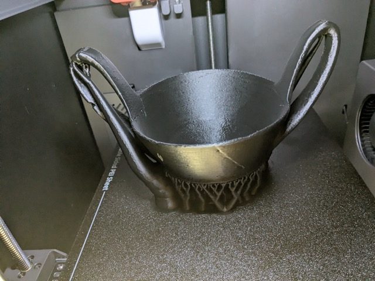
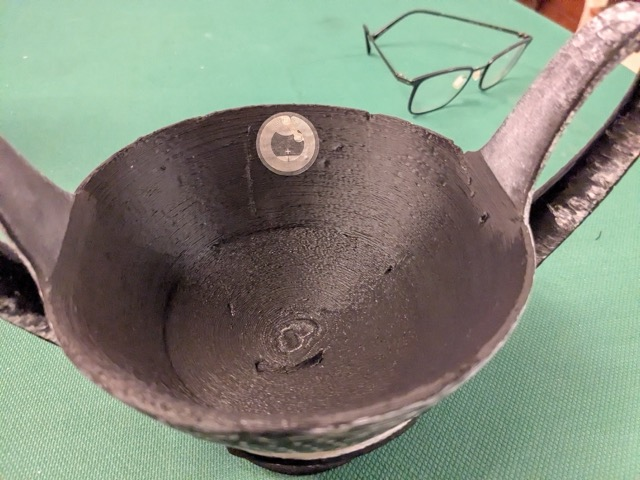
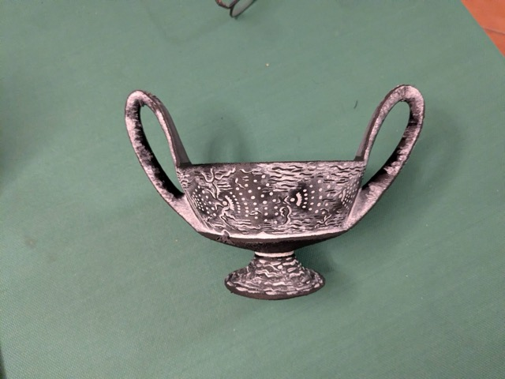
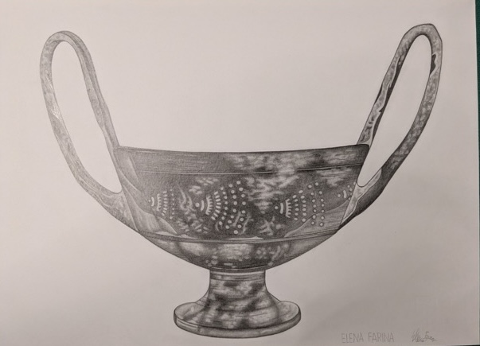

Kantharos in bucchero
Coppa carenata su piede a tromba con anse a nastro. Prima metà del VI secolo a.C. Il bucchero è una ceramica etrusca caratteristica, di colore nero-grigio brillante, ottenuta con una cottura in ambiente riducente.
Questo esemplare proviene dalle collezioni del MAAM di Grosseto (n. catalogo 163492). Il modello 3D è stato acquisito con RealityScan su 381 immagini.
Bucchero Kantharos
Carinated bowl on trumpet foot with overhanging ribbon handles. First half of the 6th century BC. Bucchero is a distinctive Etruscan ceramic ware with a characteristic shiny black-grey surface, achieved through reduction firing.
This specimen belongs to the collections of the MAAM in Grosseto (catalog no. 163492). The 3D model was captured using RealityScan from 381 photographs.
Il percorso — The Process




Come funziona — How it works
Acquisizione fotogrammetrica del vaso con RealityScan (381 foto)
Stampa 3D a filamento PLA del modello
Tag NFC adesivo applicato all’interno della coppa
Avvicinare il telefono: si apre questa pagina con il modello 3D e l’audio